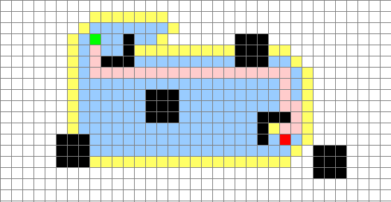

ASCII Chess Game
A 2-player chess game to be played locally within a single terminal window. It displays efficient use of object oriented programming techniques, such as abstract classes and methods. Coded in Java.
https://github.com/timwalkercs/CMD-Chess
Path Finding Visualizer

Generates large grids with randomly blocked nodes and visualizes several graph traversal algorithims with a simple UI.
https://github.com/timwalkercs/Pathfinding-Visualizer
Mock Ebay Site

Barebones market website that makes use of JSPs as well as a functioning database created with MySQL.
https://github.com/timwalkercs/BuyMeDB
JavaFX Photo Album
A photo album application that allows multiple users to log in and store their favorite images. Photos can be tagged for the purpose of searching and organization.
https://github.com/timwalkercs/Photos83
Android Photo Album
A mobile recreation of the previous photo album project, designed and coded with Android Studio.
https://github.com/timwalkercs/Photos83Mobile